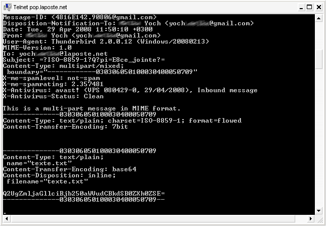
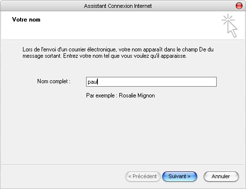
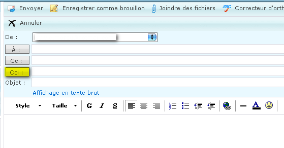

Pour ceux d'entre vous qui se demandent comment fonctionne l'e-mail que nous utilisons tous, je propose de le découvrir avec moi, pas à pas.
Après une courte partie théorique, je vous promets une partie pratique qui vous fera comprendre réellement le fonctionnement de la messagerie électronique, et plus globalement des protocoles réseau.
Après cela, configurer n'importe quel client de messagerie sera pour vous un jeu d'enfant ! ;)
La notion de réseau informatique signifie la possibilité pour des ordinateurs de communiquer entre eux, d'échanger des informations ou d'interagir l'un avec l'autre. C'est le fondement même d'Internet.
Il faut savoir que le réseau informatique repose sur deux principes fondamentaux :
la reconnaissance des machines entre elles,
le transport de l'information.
L'adresse IP
C'est la façon dont les ordinateurs se reconnaissent entre eux.
L'adresse IP est l'adresse d'une machine qui lui permet d'être reconnue par les autres machines du réseau. Chacune a son adresse propre et unique, qui lui permet d'être identifiée sur le réseau.
Citation : Wikipédia
Il existe des adresses IP de version 4 et de version 6. En 2007, la version 4 est la plus utilisée. Elle est généralement notée avec quatre nombres compris entre 0 et 255, séparés par des points. Exemple : 212.85.150.134
Conclusion : Si vous êtes connecté à Internet, vous avez forcément une adresse IP. Et lorsque vous visitez un site Internet, votre PC se connecte au site grâce à l'adresse IP de ce dernier.
Le fonctionnement d'Internet repose sur des ordinateurs chargés de fournir des services au reste du réseau. Ces ordinateurs doivent être reliés au réseau en permanence. On les appelle des serveurs.
Les utilisateurs sont appelés les clients. Ils doivent connaître l'adresse du serveur pour se connecter à lui.
Les protocoles
Les protocoles sont une façon pour des ordinateurs d'échanger des informations sur un réseau. Ces protocoles varient selon les besoins de l'échange. L'Internet Protocol (IP) est lui-même un protocole d'identification.
Exemple :
Les sites Web utilisent le protocole HTTP, qui est le protocole d'échange de fichiers HTML.
Un serveur web est donc un serveur HTTP. Il est chargé d'envoyer les pages HTML et autres à ceux qui les demandent.
Lorsque vous entrez une adresse web dans la barre de votre navigateur, le nom du site représente en réalité l'adresse IP du serveur. Le navigateur envoie en fait une requête au serveur en question, qui lui renvoie alors la page demandée.
Les serveurs mails
L'un des services les plus importants fournis par les serveurs est celui d'acheminer le courrier d'une machine à l'autre : ce sont les serveurs mails.
Bon, je crois qu'une petite réflexion sur la structure d'une messagerie ne sera pas inutile.
L'envoi d'un courrier par la Poste passe par quatre étapes :
1. L'expéditeur écrit le courrier.
2. Il le poste (bureau de poste, boîte postale).
3. La Poste achemine le courrier jusqu'à la boîte aux lettres du destinataire.
4. Le destinataire ouvre sa boîte aux lettres et y trouve son courrier.
L'envoi d'un courriel suit exactement le même processus avec les serveurs :
1. Vous écrivez le message.
2. Vous confiez le message au "bureau de poste" : un serveur SMTP.
3. Le mail arrive dans la boîte aux lettres du destinataire : un serveur POP ou IMAP
4. Enfin, il peut consulter ses messages auprès de son serveur.
Résumé :
Les e-mails utilisent deux types de serveurs, ayant chacun des modes de fonctionnement (protocoles) particuliers :
Pour qu'un ordinateur puisse communiquer correctement avec le réseau, et effectuer plusieurs communications à la fois, il dispose d'un certain nombre de ports, qui sont comme des adresses à l'intérieur de l'ordinateur.
Les serveurs ne font pas exception. Un seul ordinateur peut simultanément faire office de serveurs HTTP, FTP, DNS, mails, et j'en passe... On dit que le serveur écoute sur le port, pour savoir si aucune requête ne lui parvient.
Pour simplifier les choses, on a attribué des ports bien précis à chaque type de service :
port 21 pour les serveurs FTP.
port 80 pour les serveurs HTTP.
port 25 pour les serveurs SMTP.
port 110 pour les serveurs POP.
port 143 pour les serveurs IMAP.
etc.
Je crois que vous avez maintenant tout compris. Sinon, je vous conseille de relire attentivement cette partie du cours, qui sera indispensable pour la suite.
Internet à ses tout débuts n'était qu'une sorte de réseau décentralisé très simple, reliant quelques machines. C'était l'Arpanet. o_O
Il faut savoir que tout le monde n'a pas toujours pu posséder son propre ordinateur :( . Auparavant, les ordinateurs prenaient beaucoup trop de place et coûtaient très cher. Ils étaient donc réservés aux universités, aux centres de recherches, etc.
Il y avait un gros ordinateur (le Central), auquel chacun pouvait se connecter à l'aide d'un clavier et d'un écran : c'est ce qu'on appelle un terminal. (Illustration ci-contre - Source : Wikipédia)
À l'époque, les chercheurs ont établi un moyen de réaliser des opérations à distance (via réseau) sur le central. Ce qui a abouti, vers 1972, à la création d'une norme de communication à distance via réseau : TELNET. Telnet est donc avant tout un protocole. (Si vous ne savez pas ce qu'est un protocole, je vous conseille de jeter un coup d'oeil au premier chapitre de ce cours :p ).
L'unité centrale faisait tourner un serveur Telnet en arrière-plan, auquel le client pouvait se connecter. Le logiciel prévu pour cela est le client Telnet.
Bon, allez, je vous fais un petit récapitulatif historique :
Dates
Évolution de l'Internet
1969
Création de l'Arpanet
1971
Le courrier électronique est créé par Ray Tomlinson
1972
Définition du protocole Telnet
1974
Création du TCP/IP
1989
Naissance du Web : Internet que nous connaissons aujourd'hui
Sans entrer plus avant dans les détails du protocole Telnet, laissez-moi vous présenter le logiciel en question.
Nul besoin de télécharger Telnet, il est déjà présent sur tout ordinateur normalement constitué ! :magicien: Il existe certes des logiciels téléchargeables permettant de faire du Telnet (je pense surtout à PuTTY), mais nous allons nous en passer. :waw:
Sous Windows, allez dans Démarrer > Exécuter, et tapez simplement la commande : telnet. Une magnifique fenêtre noire s'ouvre :
Parce que Telnet fait partie de tout système d'exploitation qui se respecte, on parle plutôt de commande telnet. Vous pouvez aussi y accéder depuis l'invite de commande MS-DOS.
De nos jours, si la commande Telnet n'est plus très utilisée, elle demeure un outil permettant d'établir très facilement des connexions réseau avec des ordinateurs distants, et de "parler" avec eux.
Le client Telnet n'est pas limité à la communication Telnet à proprement parler. Il peut aussi nous servir à tester la disponibilité d'un serveur SMTP - par exemple, ou bien récupérer des fichiers par FTP, pour peu que l'on connaisse le protocole à utiliser.
Nous allons tout de suite passer à la pratique et utiliser Telnet pour se connecter aux serveurs mails. Alors accrochez-vous, ça va secouer...
Nous allons commencer par tester la disponibilité du serveur SMTP de mon fournisseur. Vous pouvez choisir le vôtre si vous le désirez (et si vous le connaissez).
Lancez Telnet, et tapez :
open smtp.laposte.net 25
Cela signifie tout simplement que vous demandez d'établir une connexion avec le serveur SMTP de la Poste, à l'adresse smtp.laposte.net et sur le port 25.
Rappelez-vous que smtp.laposte.net correspond à une adresse IP. Cela revient donc à écrire :
open 193.251.214.114 25
Essayez !
Si tout se passe bien, vous recevez alors une réponse du genre : 220 mwinf8407.laposte.net ESMTP ABO ****************************
En plus de ses réponses « explicites » (qui peuvent varier), un serveur SMTP utilise des codes pour répondre au client :
220 : cela veut dire que la connexion est bien établie et que le serveur est prêt. mwinf8407.laposte.net : c'est le nom du serveur. ESMTP : c'est le type du serveur (ESMTP est un protocole plus récent que le SMTP, mais ils sont très semblables). ABO : pas la moindre idée de ce que c'est, et croyez-moi, on s'en fiche !
Tiens, un deuxième message : 421 mwinf8407.laposte.net Error:Timeout exceeded Qu'est-ce que c'est ? :euh:
Les codes d'erreur
Ceux qui parmi vous comprennent l'anglais ont déjà traduit... :lol: Ce cher serveur ne va pas attendre indéfiniment qu'on se décide à lui parler. Si vous n'avez rien à lui dire, il coupe la connexion sans vous demander votre avis !
Mais ce n'est pas grave ^^ , nous avons appris là un nouveau principe du protocole SMTP : les codes d'erreur. 421 veut dire : "service non disponible".
Il y en a quelques autres, mais je vous ne demanderai pas de les apprendre. Sachez simplement qu'ils existent. Ça pourra vous être utile si vous avez un problème.
Bon à savoir :
Citation : Wikipédia
Pour vous repérer rapidement vous pouvez, à l'aide du premier chiffre du code retour, avoir le statut global de la demande. Les 2 autres chiffres vous donneront le détail du statut. * Code 2 : la demande a été exécutée sans erreur. * Code 3 : La demande est en cours d'exécution. * Code 4 : indique une erreur temporaire. Réessayez plus tard. * Code 5 : la demande n' est pas valide et n' a pas pu être traitée. Vérifiez votre syntaxe.
Le protocole SMTP exige que l'on se présente. Cela se fait ainsi :
ehlo localhost
Cette fois-ci, le serveur devient plus bavard ;) : 250-mwinf8407.laposte.net 250-PIPELINING 250-SIZE 17000000 250-AUTH PLAIN LOGIN 250-8BITMIME
Explications
Non, non, ne partez pas... Je ne vais pas vous embêter avec tout ça :p .
Juste quelques explications :
On se présente en "saluant" tout d'abord le serveur. Essayez d'ailleurs avec helo localhost, il devrait vous comprendre :lol: . Mais ehlo est plus adapté aux serveurs ESMTP.
ehlo localhost signifie donc : "Bonjour, moi je m'appelle localhost". ^^ (localhost est un peu comme le diminutif de votre adresse IP)
250 est le code que vous renvoie le serveur pour dire qu'il est prêt à exécuter vos ordres. Puis il se présente à son tour :mwinf8407.laposte.net
Ensuite viennent des informations sur les fonctionnalités disponibles sur le serveur, que nous allons découvrir au prochain chapitre.
Bien souvent, les FAI bloquent l'utilisation anonyme de leurs serveurs mails pour éviter le spam. Je vous demande à présent d'user de votre véritable adresse mail auprès de votre Fournisseur Mail. Vous trouverez très facilement l'adresse de votre serveur SMTP sur le web (chercher par exemple ici)
Nous allons donc devoir nous identifier :
Vous vous souvenez cette ligne ? 250-AUTH PLAIN LOGIN
Cela voulait dire que le serveur supporte l'identification de type auth plain. Nous allons donc pouvoir nous identifier de cette manière.
Mais avant que vous appreniez cela, il faut que je vous enseigne un truc super barbare :D : L'encodage Base64 ! :diable:
Les serveurs SMTP utilisent un encodage particulier pour l'identification. C'est le Base64. Pas la peine d'essayer de comprendre à quoi ça sert, de toute façon, c'est comme ça :p !
Le auth plain se décline sous cette forme : \0login\0motdepasse (\0 représente un caractère nul, ce qui va compliquer les choses). (Note : le login est le plus souvent ce qui est écrit devant l'arobase dans votre adresse e-mail. Exemple : paul@laposte.net).
Nous allons mettre notre login et notre mot de passe dans la zone TEXT.
Cliquez sur le bouton <encode> sous la zone TEXT.
Ensuite, allez dans la zone HEX, et ajoutez 00 avant le login, et 00 avant le mot de passe (deux chiffres hexadécimaux représentent un caractère).
Cliquez sur le bouton <decode> de la zone HEX, et notez bien le résultat de la zone BASE64, en respectant la casse (Majuscules/minuscules). Ce qui donne pour \0paul\0123 : AHBhdWwAMTIz (c'est fou ce que c'est ressemblant ! :lol: )
Il existe en réalité deux types d'identification, le auth login, et le auth plain.
Personnellement, j'ai dû apprendre le auth login parce que je n'arrivais pas à encoder des caractères nuls en Base64. Mais si le serveur permet le auth plain, je trouve que celui-ci est préférable, car plus court.
Vous allez devoir encoder votre login et votre mot de passe séparément en Base64 (sans caractère nul).
Le auth login se passe en deux temps : auth login 334 VXNlcm5hbWU6 cGF1bA== 334 UGFzc3dvcmQ6 MTIz 235 plain authentication successfull
Conclusion :
Si vous avez bien reçu le code 235, c'est que c'est tout bon ! :-°
Nous pouvons enfin envoyer un mail. Tiens donc, à qui vais-je l'envoyer, moi... ? :(
Réfléchissons un peu :
Un e-mail est composé d'un expéditeur, d'un destinataire, et d'un contenu. Il va donc falloir fournir tous ces éléments au serveur.
Voici les formules magiques : :magicien:
mail from: <[email protected]> 250 Ok rcpt to: <[email protected]> 250 OK data 354 End data with <CR><LF>.<CR><LF> Merci beaucoup pour ton site. Il est formidable ! . 250 Ok
Explications
On spécifie tout d'abord l'expéditeur : [email protected] Ensuite (si le serveur répond OK), on indique le(s) destinataire(s).
Ensuite (toujours s'il est OK), vient le mot-clé : data. C'est l'indication que le message commence.
Mais, mais... comment le serveur saura que le message se termine ?
Toujours le même qui ne comprend vraiment pas l'anglais ! :p Tout a été prévu. Le serveur lui-même te dit : End data with <CR><LF>.<CR><LF> Ce qui veut dire que pour lui annoncer que tu as fini, passe à la ligne, écris un point (comme ce que j'ai fait), et passe de nouveau à la ligne.
Et voilà, le message est envoyé !
Mais comment on fait pour écrire le sujet du mail ?
Bonne question ! Pour cela, après le data, on écrit : Subject: votre sujet ... et on passe à la ligne.
Et si je veux envoyer le mail à plusieurs personnes ?
Mais, mais...j'ai reçu un OK, et le mail n'est jamais arrivé !
Dans ce cas, le mail a bien été envoyé, mais a été intercepté en cours de route pour diverses raisons (probable spam, etc.). Je ne peux pas vraiment vous aider dans ce cas :( , mais en réfléchissant, vous trouverez peut-être la solution. (J'ai parfois reçu un message de retour du serveur expliquant la raison de son refus.)
Si vous avez tout fini, il ne nous reste plus qu'à saluer notre cher serveur :
quit 221 Bye
Résumé en image :
Il y a même des serveurs encore plus polis que ça, croyez-moi ! :lol:
Vous avez surement déjà remarqué qu'une adresse de courrier suit un type bien précis :
À gauche, l'utilisateur du compte mail.
À droite, le fournisseur du service de messagerie.
Et puis l'arobase au milieu (il sert de séparateur).
L'arobase est un caractère réservé : vous ne pouvez donc pas avoir d'adresse du genre "p@ul@laposte.net". :(
Lorsque le courrier est envoyé, le serveur SMTP vérifie le nom à droite de l'arobase. Il sait alors que le courrier doit être dirigé vers tel ou tel domaine.
Une fois que le courrier est parvenu à destination, le serveur du domaine concerné se charge d'insérer le courrier dans la boite aux lettres du destinataire, qui reçoit alors son courrier avec émerveillement ! :)
Comme vu plus haut, il y a en réalité deux types de serveurs pour récupérer les mails : les serveurs POP, et les serveurs IMAP. Nous allons tout d'abord découvrir le protocole le plus utilisé : POP3, qui est la version la plus récente des serveurs POP.
Le protocole POP est tout simplement "le langage" permettant de récupérer et de manipuler les e-mails se trouvant sur les serveurs POP.
Dans ce chapitre, nous allons apprendre à le faire avec Telnet. N'ayez pas peur, tout le monde devrait y arriver du premier coup. ^^
Question : comment va-t-on s'y prendre pour se connecter au serveur POP ?
Ben... C'est simple, on lance un Telnet, et on fait : open pop.laposte.net 25
Si vous faites ça, vous recevrez un message du genre : 421 Cannot connect to SMTP server 191.251.214.115
On va plutôt ouvrir la connexion sur le port 110.
Lancez Telnet, et tapez :
open pop.laposte.net 110
Pour ceux qui n'auraient pas suivi ^^ , cela signifie tout simplement que vous demandez d'établir une connexion avec le serveur pop.laposte.net sur le port 110.
Rappelez-vous que pop.laposte.net correspond à une adresse IP. Cela revient donc à écrire :
open 193.251.214.115 110
Essayez !
Si tout se passe bien, vous devriez avoir un retour du genre (en rouge) :
open pop.laposte.net 110 +OK connected to pop3 on 8201
Pourquoi cette fois il n'y a pas eu de message SMTP du genre "220..." comme tout à l'heure ?
Parce que l'on ne parle pas avec un serveur SMTP, mais avec un serveur POP, pardi ! :p Les réponses du serveur POP sont très simples à comprendre (même si vous ne savez pas ce que veut dire OK ! :lol: ) :
si la phrase commence par le signe +, c'est bon ;
si elle commence par le signe -, eh bien, c'est pas bon !
La première chose à faire est de vérifier si vous avez reçu un mail. Je vais donc utiliser une nouvelle commande :
stat +OK 1 2552
Le serveur me renvoie que j'ai 1 e-mail non lu, d'une longueur de 2552 octets.
Pour le lire, j'entre : retr 1 +OK Message follows ..... Subject: Dernière news. Bla Bla Bla...
retr veut dire "récupère", et on lui passe en argument le numéro d'e-mail à récupérer (dans mon cas, 1).
OK, OK... Mais qu'est-ce que c'est que tous ces textes cabalistiques avant le message ?
Pas de panique ! :p Il faut savoir que les logiciels de messagerie et les serveurs SMTP qui se respectent envoient des tas d'informations sur la source de l'e-mail : ce sont les en-têtes du mail. Je ne vous demande pas de tout comprendre, mais jetez-y un coup d'oeil, c'est très instructif !
Et si j'ai plusieurs mails dans ma boîte de réception, il se passe quoi ?
Si jamais vous recevez une réponse du genre : +OK 3 70204
...vous pouvez sans aucun problème faire : retr 1 Bla Bla Bla... retr 2 Bla Bla Bla... retr 3 Et encore Bla...
Mais si vous désirez simplement connaître la taille de chacun des mails séparément, il existe une commande simple : list +OK scan listing follows 1 2323 2 3842 3 64039 .
Récupérer les en-têtes
D'aucuns voudront consulter les en-têtes avant de récupérer le mail. Pour cela, il existe une commande spéciale qui permet de récupérer un nombre de lignes précis du message, sachant que les lignes d'en-têtes ne sont pas comptées. On l'utilise par exemple ainsi : top 1 0
J'ai demandé de récupérer 0 ligne sur le message numéro 1, ce qui me permet de récupérer uniquement les en-têtes.
Effacer un message
Si je veux effacer le mail, je fais :
dele 1 +OK Message deleted
C'est pareil : dele veut dire "efface", et on lui passe en argument le numéro d'e-mail à effacer (dans mon cas, 1).
Comme envoyer une pièce jointe avec telnet est quasiment impossible, nous allons envoyer une pièce jointe de façon classique, puis la récupérer avec telnet.
Pour des raisons de simplicité, nous allons envoyer une pièce jointe toute simple. Lancez votre éditeur de texte, puis entrez-y la phrase :
Sauvegardez le fichier au format .txt, et enfin envoyez-le à votre adresse mail.
Nous allons maintenant récupérer ce courrier avec telnet. On lance telnet, on se connecte au serveur POP3 sur le port 110, on s'identifie, puis on vérifie que le mail est bien arrivé, et enfin on le récupère avec la commande retr.
Voici ce que ça donne chez moi (fin du message) :
Vous pouvez constater que le type MIME de la pièce jointe est donné : Content-Type: text/plain Ainsi que la description du fichier (pièce jointe), et son nom : Content-Disposition: attachment; filename="texte.txt"
Et enfin (parce que ça ne pouvait quand même pas être si simple ^^ ) : Content-Transfert-Encoding: base64 Ce qui veut dire que le fichier a été encodé en base64, comme c'est généralement le cas (si vous ne savez pas ce que c'est, vous devriez relire ceci ).
Vous pouvez constater que la pièce jointe a été encodée en base64.
Et le pire, c'est que les pièces jointes seront toujours encodées en base64. Alors, imaginez-vous une image en base64 ! Et je ne vous parle pas de la longueur... :p Voilà pourquoi il n'est pas très facile d'envoyer une pièce jointe avec telnet.
IMAP (aujourd'hui IMAP4rev1) est un protocole plus récent et moins bien connu que le protocole POP.
Il est néanmoins plus puissant que ce dernier, et permet notamment la gestion des mails sur le serveur même, c'est le mode online : les mails restent sur le serveur et sont manipulés à distance par le client de messagerie. Bien entendu, le mode offline (le courielleur télécharge les mails et se charge de leur gestion) existe aussi avec IMAP, à l'instar du protocole POP.
Tout cela pour vous prévenir que ce protocole est nettement plus complexe que le protocole POP, aussi nous n'allons aborder que les notions les plus simples...
La connexion reste tout aussi simple, souvenez vous simplement que le port par défaut est le port 143.
On fait donc (par exemple) :
open imap.laposte.net 143
Le serveur devrait répondre quelque chose comme : * OK IMAP4 server ready
Maintenant attention, vous allez faire : 1 login paul 123 1 OK User logged
Pas de panique, je vais vous expliquer.
Les tags
Avec l'IMAP, chaque commande doit être précédée d'un tag, qui va servir à identifier la commande. J'ai choisi 1, mais j'aurais aussi pu choisir a, ou 0001, ou autre... Le serveur répond en indiquant que la commande 1 a réussi (ou échoué...).
Par contre, si vous aviez fait : login paul 123 vous auriez reçu un beau message d'erreur : login BAD Unreconized Command
Pour ceux qui n'auraient pas compris : le serveur a interprété login comme un tag, et paul comme commande. Donc il retourne BAD, forcément !
Maintenant, si vous entrez un mauvais login, vous aurez le droit seulement à : 1 NO login failed: user not found
BAD signifie qu'il y a eu une erreur de protocole, tandis que NO veut seulement dire que l'action a échoué.
Le serveur IMAP divise votre "boite aux lettres" en compartiments. Tant que vous n'en avez sélectionné aucun, vous ne pouvez pas faire grand-chose...
Je vais vous montrer comment connaître tous vos compartiments : 2 list "*" "*"
Chez moi j'ai : * LIST (\HasChildren) "." "INBOX" * LIST (\HasChildren) "." "INBOX.DRAFT" * LIST (\HasChildren) "." "INBOX.OUTBOX" * LIST (\HasChildren) "." "INBOX.QUARANTAINE" * LIST (\HasChildren) "." "INBOX.TRASH" 2 OK Completed (0.000 secs 6 calls)
J'ai donc cinq compartiments. Vous l'avez compris, le plus intéressant est le compartiment INBOX, qui est la boite de réception. INBOX.TRASH = messages supprimés, INBOX.QUARANTAINE = messages en quarantaine, etc.
Vous pouvez remarquer aussi que les premières lignes commencent par un *. Ce sont des lignes sans tag (untagged), car le tag n'est renvoyé que lorsque la commande a fini de s'exécuter.
Maintenant, on va sélectionner notre boite de réception : 3 select INBOX * FLAGS (\Answered \Flagged \Draft \Deleted \Seen) * OK [PERMANENTFLAGS (\Answered \Flagged \Draft \Deleted \Seen \*)] * 1 EXISTS * 0 RECENT * OK [UNSEEN 1] * OK [UIDVALIDITY 1199996497] * OK [UIDNEXT 38] 3 OK [READ-WRITE] Completed
Arrêtez de me regarder comme ça... o_O 1 EXISTS nous dit qu'il y a un message dans la boite. 0 RECENT nous dit que ce message n'est pas récent, c'est-à-dire qu'il était déjà là lors de notre précédente consultation. [UNSEEN 1] veut dire simplement qu'il y a un message non lu. Eh oui, vous commencez à comprendre ce qu'est la gestion des mails online ! ;)
Si vous vous reconnectez à votre serveur IMAP, vous constaterez avec horreur que votre message est toujours au statut non lu (UNSEEN).
Mais comment est-ce possible ?
C'est simple, si vous voulez que le message soit mis en lu, il faut avertir le serveur ! (un courrielleur l'aurait fait automatiquement, mais pas telnet).
C'est là qu'interviennent les flags : les flags (en anglais "drapeaux") permettent de déterminer le statut du mail.
Vous vous souvenez cette ligne : * FLAGS (\Answered \Flagged \Draft \Deleted \Seen) ? Elle nous donne les types de flags possibles :
answered = répondu ;
flagged = post-it ;
draft = brouillon ;
deleted = supprimé ;
seen = lu.
Tant que vous n'avez pas ajouté le flag (/Seen), le message sera toujours considéré comme non lu !
Voici comment procéder : 5 store 1 +flags (\deleted) * 1 FETCH (FLAGS (\Deleted \Seen)) 5 OK Completed
Pour supprimer le mail définitivement, il y a encore une autre commande : 6 expunge * 1 EXPUNGE * 0 EXISTS * 0 RECENTS 6 OK Completed
OK, mais alors il sert à quoi le répertoire INBOX.TRASH ?
Bonne question !
La réponse est que si vous faites expunge, le mail est supprimé définitivement. Mais si on veut simplement l'envoyer "à la corbeille", il y a le trash pour cela.
Pour cela, il aurait fallu faire : 6 copy 1 INBOX.TRASH 6 OK [COPYUID 1199996497 38 1] Completed 7 expunge * 1 EXPUNGE * 0 EXISTS * 0 RECENTS 7 OK Completed
Je crois que ce sera tout !
Ah, j'oubliais... Il vous reste à savoir comment quitter proprement : 8 logout * BYE LOGOUT received 8 OK Completed
Les serveurs SMTP n'ont pas toujours été capables de transmettre tous les types de texte. A la base, ils n'ont été prévus que pour transmettre les caractères anglophones, ce qui est très limité !
Les codages de caractères
Citation : Wikipédia
Un codage de caractères est un code qui associe un jeu de caractères d'une langue naturelle (comme un alphabet) avec un jeu de quelque chose d'autre, comme des nombres ou des signaux électriques.
Je vais essayer de vous expliquer à ma façon : un ordinateur ne comprend à la base que le binaire, c'est à dire des suites de 0 et de 1...
Mais alors, avec les lettres, les chiffres, les symboles, le chinois..., comment fait-il ?
En réalité, le binaire reste derrière tout cela ! :p
Explication : prenons l'exemple de l'octet. Un octet est composé de 8 bits, c'est à dire d'une série de 8 chiffres en binaire. Ce qui permet d'avoir 28 = 256 combinaisons ! Exemple : 00000000 => 0 ; 00000001 => 1 ; 00000010 => 2 ; 00000011 => 3 ; 01100100 => 100 ; 11111111 = 255.
A présent, nous pouvons convenir par exemple que : 01000001 (binaire) => 65 (décimal) => A ; 01000010 (binaire) => 66 (décimal) => B, etc.
C'est cela la notion d'encodage : décider que telle valeur est égale à tel caractère !
Le problème du codage ASCII
Table ASCII (cliquez pour agrandir)
Le codage ASCII date de 1961 et reste le plus répandu dans le monde de l'informatique. Internet ne fait pas exception à la règle...
Le problème est que le codage ASCII est vraiment très limité (7 bits, soit 26 = 128 combinaisons). Ce codage donc, suffisant pour les caractères anglais, ne l'est plus du tout si l'on veut utiliser des caractères accentués, etc.
En conclusion, avec les anciens serveurs SMTP, seuls les caractères codés en ASCII pouvaient être transmis correctement. Pour faire passer des messages plus diversifiés, il a fallu ruser un peu...
Il fallait en fait encoder le texte dans un autre codage, permettant de passer les caractères complexes divers en ASCII (et non en binaire, vous suivez ?...), puis le décoder à l'arrivée.
Bon, allez, je vois que vous êtes perdus, je vous fais un petit schéma :
Plusieurs types d'encodages existent. Les plus utilisés pour le transfert de courrier sont le Quoted-Printable (7 bits) et le Base64 (6 bits). Chaque partie du mail (texte, pièce jointe, etc.) peut être encodée différemment, selon le codage le plus adapté.
C'est tout ?
En réalité, il nous reste encore un problème !
Les différents systèmes d'exploitation (ainsi que les logiciels...) ne sont pas toujours d'accord sur l'encodage 8 bits à employer pour le texte. Il y a ainsi les codages ISO-8859-1, Windows-1252...
Et c'est pire si vous utilisez des caractères complexes, auquel cas vous utiliserez des codages exotiques comme le UTF-8 (européen), le Shift-JIS (japonais), ou le Big5 (chinois)...
Conclusion : il ne suffit plus d'encoder le texte différemment, il faut aussi retenir l'encodage de base utilisé pour que le texte puisse être décodé sans problème !
Mais alors comment faire avec tout ce bordel !?
Solution : Multipurpose Internet Mail Extension
Pour faire de l'ordre dans tout cela, a été créé le MIME.
Citation : Wikipédia
Multipurpose Internet Mail Extensions (MIME) est un standard internet qui étend le format de données des courriels pour supporter des textes en différents codages de caractères autres que l'ASCII, des contenus non textuels, des contenus multiples, et des informations d'en-tête en d'autres codages que l'ASCII.
Je crois que pour mieux appréhender le MIME, rien ne vaut la pratique ! Nous allons maintenant analyser un message avec une pièce jointe...
Comme envoyer une pièce jointe avec telnet est quasiment impossible, nous allons envoyer une pièce jointe de façon classique, puis la récupérer avec telnet.
Pour des raisons de simplicité, nous allons envoyer une pièce jointe toute simple. Lancez votre éditeur de texte, puis entrez-y la phrase :
Sauvegardez le fichier au format .txt, et enfin envoyez-le à votre adresse mail.
Nous allons maintenant récupérer ce courrier avec telnet. On lance telnet, on se connecte au serveur POP3 sur le port 110, on s'identifie, puis on vérifie que le mail est bien arrivé, et enfin on le récupère avec la commande retr.
Voici ce que ça donne chez moi (sans les entêtes) :

Analysons !
MIME-Version: 1.0 Ici, la version MIME est donnée (je crois que vous vous en seriez doutés !).
Subject: =?ISO-8859-1?Q?pi=E8ce_jointe?= Ici, le sujet de mon message("pièce jointe") a été encodé en Quoted-Printable, et doit être décodé selon le codage ISO-8859-1.
Content-type: multipart/mixed; boundary="------------030306050100030400050709" Ces deux lignes sont importantes! Elles signifient que le mail contient plusieurs parties, qui sont séparées par ------------030306050100030400050709.
This is a multi-part message in MIME format. Indique le début du message.
Corps du message. Comme je n'ai rien mis dans le corps du message, l'encodage est resté sur 7 bits, mais cela peut varier.
------------030306050100030400050709 Content-Type: text/plain; name="texte.txt" Le type MIME de la pièce jointe est donné, ainsi que son nom. Le type varie selon la pièce que vous avez reçue, ce peut être aussi : image/jpeg, audio/x-ms-wma (Windows Media Audio), video/x-flv (vidéo Flash), etc.
Content-Transfert-Encoding: base64 Ce qui veut dire que le fichier a été encodé en base64, comme c'est généralement le cas.
Nous allons à présent pouvoir configurer très simplement notre client de messagerie.
À titre d'exemple, j'ai choisi Outlook Express et Thunderbird, qui sont les logiciels les plus utilisés. Mais vous pourrez très facilement adapter avec un autre logiciel : le principe reste le même. :-°
Nous devons tout d'abord créer un compte. Allez dans Outils -> Comptes...
Cliquez ensuite sur Ajouter -> Courrier
Entrez votre nom :

Puis votre adresse mail :
Enfin, nous devons indiquer à Outlook Express le serveur sur lequel il doit chercher le courrier (cela peut être un serveur POP ou IMAP, selon votre fournisseur de messagerie), et le serveur SMTP à utiliser pour l'envoi.
Et enfin, cliquez sur Terminer.
Configuration avancée
Dans le cas où le port utilisé par votre serveur n'est pas le port par défaut (exemple : Gmail utilise un accès POP3 sécurisé SSL sur le port 995), il va falloir paramétrer le port utilisé par ce compte.
Cliquez sur Propriétés :
Puis sur l'onglet Avancé :
Vous pouvez alors paramétrer votre client selon vos besoins.
Le côté "moche" de la messagerie électronique, ce qui dérange un peu tout le monde (vous vous en êtes certainement déjà rendu compte... :p ), c'est que l'on peut aussi recevoir du courrier non désiré. C'est ce que l'on appelle le pourriel, ou spam.
A partir du moment où votre adresse est connue, des tas de démarcheurs (plus ou moins légaux) se mettent à vous envoyer du courrier qui ne vous intéresse guère, et pollue votre boîte mail. Il peut arriver que cela devienne un véritable cauchemar... Certes, les meilleurs logiciels de messagerie possèdent aujourd'hui de bons filtres anti-spam, mais rien ne pourra jamais remplacer certaines précautions indispensables dans l'usage de sa boîte mail.
Le problème concerne aussi le réseau, car la quantité de mails de ce type est énorme, et utilise beaucoup de la bande passante consacrée à la messagerie. Beaucoup de ressources (et d'argent !) sont ainsi gaspillées, ce qui nuit à la qualité du réseau.
Tout d'abord, il est important de savoir identifier certaines arnaques bien connues :
Le hoax (canular)
Ce style de message, particulièrement courant, prend souvent l'aspect d'un appel à l'aide, à faire passer à toutes vos connaissances (chaîne), ou bien d'une alerte au virus, mais il existe bien d'autres variantes...
Certains canulars circulent ainsi (avec quelques variantes...) depuis des années !!!
Citation : Exemple datant de 2001 (!) - HoaxBuster
Franchement, si tu supprimes ce message sur-le-champs, c'est que tu n'as vraiment pas de coeur!!!! Salut!!! Je suis un père de 29 ans. Mon épouse et moi avions une vie merveilleuse ensemble. Dieu nous a aussi beaucoup béni en nous faisant don d'une fille. Cette petite fille est maintenant âgée de 10ans... Elle s'appelle Rachel. Il n'y a pas longtemps, les médecins ont découvert de son petit corps un cancer cérébral... Il n'existe qu'un seul moyen de la sauver, mais,hélas, nous n'avons pas assez d'argent pour payer cela. Ainsi, AOL et ZDNET ont bien voulu répondre à notre appel pour pouvoir nous aider. Et, la seule façon qui vous permettrait de nous aider est ceci: Nous vous avons envoyé ce mail et, vous, vous l'envoyez à d'autres.. A chaque fois que quelqu'un envoie ce message à au moins trois personne,AOL et ZDNET nous paieront 32 centavos. S'il vous plaît, aidez-nous!!!! GEORGE ARLINGTON
Si vous avez des doutes sur l'authenticité d'un message, sachez qu'il existe d'excellents sites de ressources sur les hoax, comme http://www.hoaxbuster.com/.
L'un des gros problèmes liés à ce genre de message en chaîne, c'est que bien souvent votre propre adresse email peut ainsi se mettre à circuler sur Internet parce que l'un de vos contacts aura renvoyé le message à tous ses contacts sans prendre de précaution...
Exemple : ce mail n'a rien de méchant en soi, mais peut s'avérer dangereux :
Le phishing (hameçonnage)
Plus grave cette fois, le phishing consiste à tendre un piège à l'utilisateur en se faisant passer pour un tiers de confiance, dans le but d'obtenir des renseignements personnels.
Bien souvent, cela se passe par l'intermédiaire d'un mail frauduleux, comme :
A noter que certains navigateurs possèdent aujourd'hui un système d'avertissement lorsque l'adresse paraît frauduleuse, mais cela n'est pas toujours suffisant. Soyez donc très circonspect si l'on vous demande vos données personnelles.
L'arnaque nigériane
Aussi appelée fraude 4-1-9, ou scam, elle consiste à vous faire croire que vous allez gagner beaucoup d'argent si seulement vous coopérez avec l'expéditeur du mail en lui envoyant de l'argent !
Citation : Exemple de scam - Wikipédia
De: Fred Kone Tel:***-******** Courriel:****@yahoo.com Bonjour,
Je m'appelle Fred Kone je suis âgé de 26 ans et je vis en Côte d'Ivoire. Malheureusement comme vous le savez mon pays traverse une période très difficile ce qui m'a contraint à fuir ma région d'habitation qui est Bouaké (dans le centre du pays). Mon père était un marchand de cacao très riche à Abidjan, la capitale économique de la Côte d'Ivoire.
Avant qu'il n'ait été grièvement blessé par les rebelles, urgemment conduit à l'hôpital il m'a fait savoir qu'il avait déposé 5 000 000$ dans une mallette dans une société de sécurité basée à Abidjan.
A l'annonce de la mort de mon père je me suis précipité dans sa chambre dans le but de prendre tout ce qu'il avait comme document administratif, j'ai découvert le certificat de dépôt délivré par la compagnie de sécurité à mon père. Une fois arrivé à Abidjan j'ai essayé de vérifier la validité de ce document.
Le directeur de la société m'a confirmé l'existence de cette mallette dans leur établissement. De peur de perdre cet argent, je sollicite l'aide de quelqu'un afin de transférer ce seul bien que mon père m'a légué dans un pays étranger pour investir car la situation en Côte d'Ivoire est toujours incertaine. Une fois le transfert effectué je me rendrai là-bas pour récupérer cet argent et y faire ma vie. Si vous êtes prêt à m'aider, envoyez-moi vite une réponse afin que l'on puisse trouver un conciliabule. Dans l'attente d'une suite favorable, recevez mes salutations et que dieu vous bénisse.
PS: N'oubliez pas de me contacter directement à mon adresse privée:****@yahoo.com Fred Kone.
Là encore, de la prudence et un peu de bon sens devraient suffire à vous protéger.
Bien utiliser sa messagerie électronique, c'est tout d'abord ne pas donner son adresse n'importe comment !
Exemple : beaucoup de sites (achats en ligne par exemple) vous demandent de vous inscrire pour pouvoir bénéficier de leurs services. Le hic, c'est que pas tout le monde prend bien soin de lire toutes les petites cases déjà cochées avant de valider sa demande !
Si vous ne décochez pas ces cases, vous pouvez être sûr que votre boîte aux lettres va se remplir de spam !
Il y a aussi un principe qui peut être intéressant dans certains cas : les fournisseurs de mails jetables. Le principe est de créer une adresse mail temporaire qui redirigera votre courrier dans votre boîte aux lettres.
Comment envoyer un mail à plusieurs destinataires sans que chacun ait accès à toutes les adresses ?
Apprenez qu'il n'est nullement nécessaire d'envoyer les mails séparément ! :lol: Et heureusement (imaginez le même message à envoyer à 300 personnes...) :-°
Il y a pour cela un paramètre tout simple dans votre courielleur : Cci (ou Bcc).
Voici comment faire : Sur Thunderbird
Sur Windows Live Hotmail

Avec ça, les membres de votre famille ne pourront pas savoir qui vous n'avez pas invité à votre anniversaire ! ;)
Ne pas ouvrir un mail de provenance douteuse
La messagerie électronique sert aussi à la propagation de virus et autres vers.
Le meilleur moyen de se protéger pour cela, c'est de ne pas ouvrir du tout les mails d'origine douteuse.
Voilà, j'espère que ces petits conseils vous seront utiles...
Et maintenant, bon surf !!!
Merci aux zCorrecteurs pour la relecture de ce tutoriel.


{kind=link}